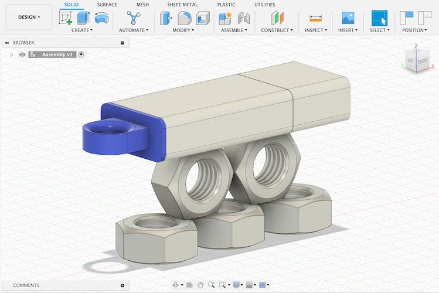
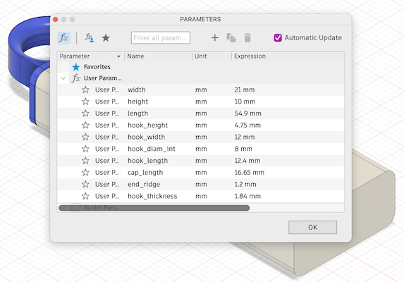
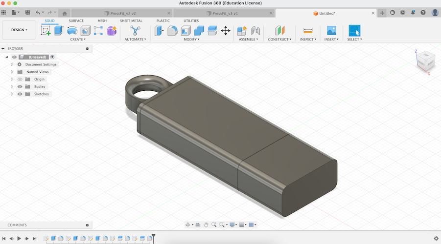
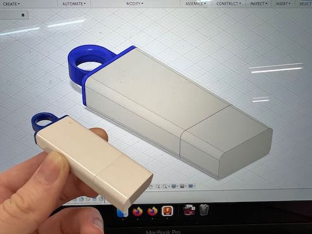
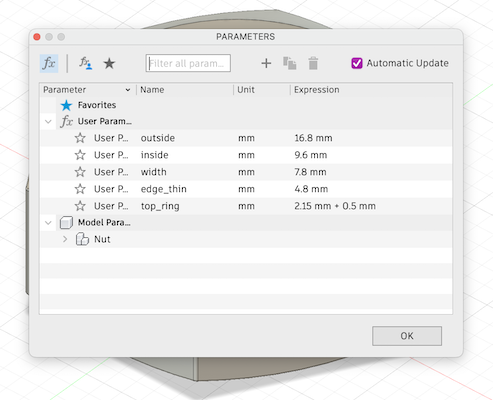
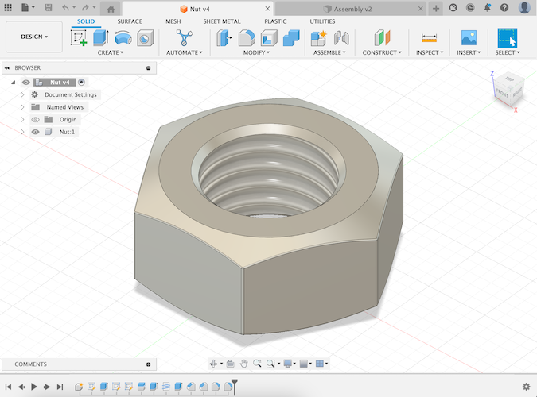
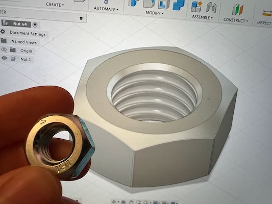

See Week 3 - Electronics to see a combination of this assignment with the kinetic sculpture.
I struggled to install Fusion on my laptop given I no longer have a student email address, so I decided to use Onshape, which I had used years ago during an internship. I spent some time re-familiarising myself with the software and good design principles.

My final assembly: a tableau of my flash drive and several copies of the metal nut I modeled.
The first item I chose to model was my trusty flash drive. I chose it because it combined simple geometry with more complex features like the circular hook.

The parameters for my flash drive. The hook was the tricky part.
I started with a rectangular prism, then used fillets to round the edges. For the hook, I extruded a block, cut a circular hole, and filleted the interior to create a smooth curve.
I then used the Split Body tool to create seams and added a slight fillet to form the surface detail. Finally, I matched materials and colours to the real object.


CAD model before colouring and comparison with the real object.

The measured parameters for the nut.


Final CAD nut model compared to the real nut.